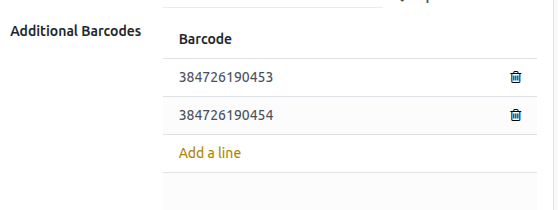
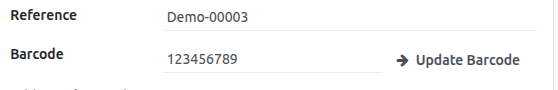

<section class="oe_container">
<div style="font-family:-apple-system,BlinkMacSystemFont,'Segoe UI',Roboto,Helvetica,Arial,sans-serif; color:#1c1c1c;">

  <!-- ================= HERO ================= -->
  <div style="padding:56px 34px 8px;">
    <p style="font-size:11.5px; font-weight:700; letter-spacing:0.2em; text-transform:uppercase; color:#5c3a52; margin:0 0 22px;">
      Odoo 18 &nbsp;&middot;&nbsp; Inventory
    </p>

    <h1 style="font-family:Georgia,'Times New Roman',serif; font-size:52px; font-weight:400; color:#141414; line-height:1.08; margin:0 0 26px; max-width:15ch;">
      Every barcode on the box.
    </h1>

    <p style="font-size:16.5px; color:#4a4a4a; line-height:1.7; margin:0 0 14px; max-width:60ch;">
      Odoo gives a product a single barcode field. Real packaging often carries several &mdash; a manufacturer
      EAN-13, retailer UPC-A, vendor code, or another identifier.
    </p>
    <p style="font-size:16.5px; color:#4a4a4a; line-height:1.7; margin:0 0 34px; max-width:60ch;">
      <strong style="color:#141414;">Additional Product Barcodes</strong> keeps every barcode on the same
      product record.
    </p>

    <div style="border-bottom:1px solid #1c1c1c; max-width:60ch; margin-bottom:16px;"></div>
    <div style="max-width:60ch;">
      <p style="font-size:19px; font-weight:700; color:#141414; margin:0 0 4px;">$5 &mdash; one-time</p>
      <p style="font-size:13.5px; color:#7a7a7a; margin:0;">Community &amp; Enterprise &nbsp;&middot;&nbsp; No configuration</p>
    </div>
  </div>

  <!-- HERO SCREENSHOT -->
  <div style="padding:38px 34px 14px;">
    
    <p style="font-size:12.5px; color:#8a8a8a; margin:12px 0 0; max-width:60ch;">
      The Additional Barcodes list, directly on the standard product form.
    </p>
  </div>

  <div style="padding:26px 34px 0;">
    <div style="border-bottom:1px solid #e0e0e0;"></div>
  </div>


  <!-- ================= 01 — PURPLE BAND ================= -->
  <div style="background-color:#5c3a52; padding:58px 34px;">
    <p style="font-size:11.5px; font-weight:700; letter-spacing:0.2em; text-transform:uppercase; color:#c2a3b7; margin:0 0 20px;">
      01 &nbsp;&mdash;&nbsp; Unlimited barcodes
    </p>
    <h2 style="font-family:Georgia,'Times New Roman',serif; font-size:38px; font-weight:400; color:#ffffff; line-height:1.15; margin:0 0 22px; max-width:20ch;">
      One product. Every barcode it carries.
    </h2>
    <p style="font-size:16px; color:#e2d3dd; line-height:1.75; margin:0; max-width:58ch;">
      An inline Additional Barcodes list sits directly on each product variant. Add a line, enter the barcode,
      and save. There is no limit and no separate screen to maintain.
    </p>
  </div>

  <!-- 01 SCREENSHOT -->
  <div style="padding:34px 34px 14px;">
    
    <p style="font-size:12.5px; color:#8a8a8a; margin:12px 0 0; max-width:60ch;">
      Each additional barcode is its own line on the product variant.
    </p>
  </div>

  <div style="padding:26px 34px 0;">
    <div style="border-bottom:1px solid #e0e0e0;"></div>
  </div>


  <!-- ================= 02 — WHITE EDITORIAL ================= -->
  <div style="padding:48px 34px 10px;">
    <p style="font-size:11.5px; font-weight:700; letter-spacing:0.2em; text-transform:uppercase; color:#5c3a52; margin:0 0 20px;">
      02 &nbsp;&mdash;&nbsp; Search finds every code
    </p>
    <h2 style="font-family:Georgia,'Times New Roman',serif; font-size:38px; font-weight:400; color:#141414; line-height:1.15; margin:0 0 22px; max-width:22ch;">
      Search should not depend on one barcode.
    </h2>
    <p style="font-size:16px; color:#4a4a4a; line-height:1.75; margin:0 0 30px; max-width:58ch;">
      Product lookup in Sales, Purchase, and the product list matches:
    </p>

    <div style="max-width:58ch;">
      <div style="border-bottom:1px solid #e0e0e0; padding:14px 0; font-size:16px; color:#141414;">Additional barcodes</div>
      <div style="border-bottom:1px solid #e0e0e0; padding:14px 0; font-size:16px; color:#141414;">The primary barcode</div>
      <div style="border-bottom:1px solid #e0e0e0; padding:14px 0; font-size:16px; color:#141414;">The internal reference</div>
    </div>

    <p style="font-size:16px; color:#4a4a4a; line-height:1.75; margin:30px 0 0; max-width:58ch;">
      This means staff can scan or search using whichever identifier is actually printed on the product.
    </p>
  </div>

  <div style="padding:36px 34px 0;">
    <div style="border-bottom:1px solid #e0e0e0;"></div>
  </div>


  <!-- ================= 03 — PURPLE BAND ================= -->
  <div style="background-color:#5c3a52; padding:58px 34px;">
    <p style="font-size:11.5px; font-weight:700; letter-spacing:0.2em; text-transform:uppercase; color:#c2a3b7; margin:0 0 20px;">
      03 &nbsp;&mdash;&nbsp; Safe barcode swaps
    </p>
    <h2 style="font-family:Georgia,'Times New Roman',serif; font-size:38px; font-weight:400; color:#ffffff; line-height:1.15; margin:0 0 22px; max-width:20ch;">
      Replace a barcode without losing it.
    </h2>
    <p style="font-size:16px; color:#e2d3dd; line-height:1.75; margin:0 0 14px; max-width:58ch;">
      When the primary barcode is updated, the previous barcode is retained as an additional barcode. Old labels
      continue to resolve to the same product.
    </p>
    <p style="font-size:16px; color:#e2d3dd; line-height:1.75; margin:0; max-width:58ch;">
      This avoids breaking existing stock labels or packaging simply because the primary barcode has changed.
    </p>
  </div>

  <!-- 03 SCREENSHOT -->
  <div style="padding:34px 34px 14px;">
    
    <p style="font-size:12.5px; color:#8a8a8a; margin:12px 0 0; max-width:60ch;">
      Updating the primary barcode, with the previous value retained on the record.
    </p>
  </div>

  <div style="padding:26px 34px 0;">
    <div style="border-bottom:1px solid #e0e0e0;"></div>
  </div>


  <!-- ================= TECHNICAL SUMMARY ================= -->
  <div style="padding:48px 34px 10px;">
    <p style="font-size:11.5px; font-weight:700; letter-spacing:0.2em; text-transform:uppercase; color:#8a8a8a; margin:0 0 26px;">
      Technical summary
    </p>

    <div style="border-bottom:1px solid #1c1c1c; margin-bottom:16px;"></div>
    <div>

      <div style="border-bottom:1px solid #e8e8e8; padding:0 0 15px; margin-bottom:15px;">
        <div style="display:inline-block; vertical-align:top; width:240px; max-width:100%; font-size:11.5px; font-weight:700; letter-spacing:0.12em; text-transform:uppercase; color:#8a8a8a; line-height:1.9;">Odoo version</div>
        <div style="display:inline-block; vertical-align:top; width:560px; max-width:100%; font-size:16px; color:#141414; line-height:1.9;">18</div>
      </div>

      <div style="border-bottom:1px solid #e8e8e8; padding:0 0 15px; margin-bottom:15px;">
        <div style="display:inline-block; vertical-align:top; width:240px; max-width:100%; font-size:11.5px; font-weight:700; letter-spacing:0.12em; text-transform:uppercase; color:#8a8a8a; line-height:1.9;">Application</div>
        <div style="display:inline-block; vertical-align:top; width:560px; max-width:100%; font-size:16px; color:#141414; line-height:1.9;">Inventory</div>
      </div>

      <div style="border-bottom:1px solid #e8e8e8; padding:0 0 15px; margin-bottom:15px;">
        <div style="display:inline-block; vertical-align:top; width:240px; max-width:100%; font-size:11.5px; font-weight:700; letter-spacing:0.12em; text-transform:uppercase; color:#8a8a8a; line-height:1.9;">Availability</div>
        <div style="display:inline-block; vertical-align:top; width:560px; max-width:100%; font-size:16px; color:#141414; line-height:1.9;">Community &amp; Enterprise</div>
      </div>

      <div style="border-bottom:1px solid #e8e8e8; padding:0 0 15px; margin-bottom:15px;">
        <div style="display:inline-block; vertical-align:top; width:240px; max-width:100%; font-size:11.5px; font-weight:700; letter-spacing:0.12em; text-transform:uppercase; color:#8a8a8a; line-height:1.9;">Price</div>
        <div style="display:inline-block; vertical-align:top; width:560px; max-width:100%; font-size:16px; color:#141414; line-height:1.9;">$5 one-time</div>
      </div>

      <div style="border-bottom:1px solid #e8e8e8; padding:0 0 15px; margin-bottom:15px;">
        <div style="display:inline-block; vertical-align:top; width:240px; max-width:100%; font-size:11.5px; font-weight:700; letter-spacing:0.12em; text-transform:uppercase; color:#8a8a8a; line-height:1.9;">Configuration</div>
        <div style="display:inline-block; vertical-align:top; width:560px; max-width:100%; font-size:16px; color:#141414; line-height:1.9;">None</div>
      </div>

      <div style="border-bottom:1px solid #e8e8e8; padding:0 0 15px; margin-bottom:15px;">
        <div style="display:inline-block; vertical-align:top; width:240px; max-width:100%; font-size:11.5px; font-weight:700; letter-spacing:0.12em; text-transform:uppercase; color:#8a8a8a; line-height:1.9;">Additional barcodes</div>
        <div style="display:inline-block; vertical-align:top; width:560px; max-width:100%; font-size:16px; color:#141414; line-height:1.9;">Unlimited</div>
      </div>

      <div style="border-bottom:1px solid #e8e8e8; padding:0 0 15px; margin-bottom:15px;">
        <div style="display:inline-block; vertical-align:top; width:240px; max-width:100%; font-size:11.5px; font-weight:700; letter-spacing:0.12em; text-transform:uppercase; color:#8a8a8a; line-height:1.9;">Search</div>
        <div style="display:inline-block; vertical-align:top; width:560px; max-width:100%; font-size:16px; color:#141414; line-height:1.9;">Additional barcodes + primary barcode + internal reference</div>
      </div>

      <div style="padding:0 0 4px;">
        <div style="display:inline-block; vertical-align:top; width:240px; max-width:100%; font-size:11.5px; font-weight:700; letter-spacing:0.12em; text-transform:uppercase; color:#8a8a8a; line-height:1.9;">Data retention</div>
        <div style="display:inline-block; vertical-align:top; width:560px; max-width:100%; font-size:16px; color:#141414; line-height:1.9;">Previous primary barcode retained when replaced</div>
      </div>

    </div>
  </div>


  <!-- ================= FINAL STATEMENT ================= -->
  <div style="background-color:#5c3a52; padding:64px 34px; margin-top:48px;">
    <h2 style="font-family:Georgia,'Times New Roman',serif; font-size:40px; font-weight:400; color:#ffffff; line-height:1.15; margin:0 0 20px; max-width:18ch;">
      One product. Every barcode.
    </h2>
    <p style="font-size:16.5px; color:#e2d3dd; line-height:1.7; margin:0 0 26px; max-width:52ch;">
      Keep every identifier your product actually carries on one Odoo record.
    </p>
    <p style="font-size:13.5px; color:#c2a3b7; margin:0; letter-spacing:0.04em;">
      $5 one-time &nbsp;&middot;&nbsp; Odoo 18 &nbsp;&middot;&nbsp; Community &amp; Enterprise
    </p>
  </div>

  <div style="padding:26px 34px 34px;">
    <p style="font-size:12.5px; color:#8a8a8a; margin:0;">
      Developed by <a href="https://viziontools.com/" style="color:#5c3a52; text-decoration:none; font-weight:700;">viziontools.com</a>
    </p>
  </div>

</div>
</section>
